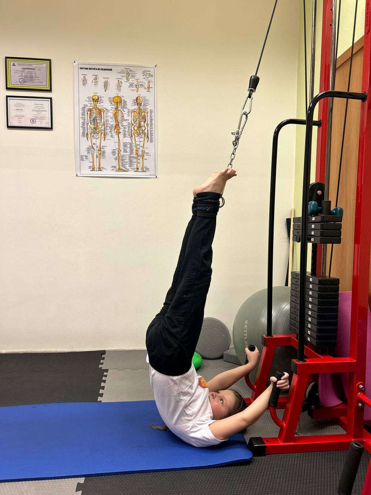

ЛФК для детей — коррекция осанки и сколиоза в Санкт-Петербурге

ЛФК для детей — это направленная работа с опорно-двигательным аппаратом ребёнка под контролем квалифицированного инструктора. В нашем центре на Петроградской стороне мы помогаем детям сформировать правильную осанку, скорректировать сколиоз и укрепить мышечный каркас. Занятия проводятся индивидуально, с учётом возраста, диагноза и физической подготовки ребёнка.
Детский организм пластичен и хорошо отзывается на правильно подобранную нагрузку. Чем раньше начата коррекция, тем быстрее и устойчивее результат. Наши специалисты работают с детьми бережно — без боли, принуждения и перегрузок.
С какими проблемами работаем
- Нарушения осанки — сутулость, круглая спина, асимметрия плеч
- Сколиоз I–III степени
- Кифоз грудного отдела позвоночника
- Вальгусная и варусная деформация стоп
- Плоскостопие — продольное и поперечное
- Слабый мышечный тонус и гипермобильность суставов
- Нарушения координации и моторного развития
- Общая физическая подготовка ребёнка
Как проходят занятия с детьми
На первичном приёме инструктор проводит осмотр ребёнка, оценивает осанку, тонус мышц, подвижность суставов и стопу. По результатам диагностики составляется индивидуальная программа коррекции.
Занятие длится 50 минут и включает упражнения на укрепление мышц спины, пресса и стоп, растяжку, координацию и баланс. Тренер контролирует технику и мотивирует ребёнка — занятия проходят в комфортной и доброжелательной обстановке. В зале одновременно занимаются не более двух человек.
Чего можно достичь
- Выравнивание осанки и уменьшение степени сколиоза
- Укрепление мышечного каркаса — естественная поддержка позвоночника
- Коррекция положения стоп при вальгусе и плоскостопии
- Улучшение координации, гибкости и общей физической формы
- Формирование привычки к правильному положению тела
Стоимость
- Первичная консультация (50 мин) — 3 000 ₽
- Индивидуальное занятие (50 мин) — 3 000 ₽
- Абонемент (50 мин) — 2 500 ₽ за занятие
Центр ЛФК находится по адресу Большая Посадская, 16 — Петроградская сторона, Санкт-Петербург.
Записаться →